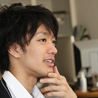

コース概要
『英語とWeb制作を同時に学びたい！』
カナダ人講師による英会話講座に加え、海外で活動してきた現役の日系クリエイターが、
海外で通用するWebデザイナーになるためのスキルをお伝えします！
カナダ人講師による英会話講座に加え、海外で活動してきた現役の日系クリエイターが、
海外で通用するWebデザイナーになるためのスキルをお伝えします！

Web制作講座
長年海外でWeb制作者として活動してきた現役の講師が、Web制作の基礎を丁寧に説明します。

英会話講座
カナダ人講師から実生活で使える英語を学びます。あなたの苦手分野を集中して克服しましょう。

ミートアップ
バンクーバーで活躍するあらゆるクリエイターが集まり、情報交換を行っています。
バンクーバーってどんな街？
バンクーバーは留学初心者向けだと言われています。日本人はバンクーバーのあるブリティッシュ・コロンビア州の人口の1%程度存在し、
エコノミスト・インテリジェント・ユニットの世界一住みやすい都市には幾度となく選ばれ、治安、インフラ、教育、文化など全ての面で高評価を得ています。
特に安全性、治安における評価が非常に高く、重犯罪の発生率が極端に低い街として知られています。
また、世界のIT産業のメッカであるシリコンバレーとも時差が同じく連携が取りやすく、
コンピューター・グラフィックスの祭典『Siggraph』の開催都市に2011年・2014年・2018年の3度選ばれるなど、
クリエイターにとって、世界に注目されている実績やその根拠を体感出来る街、それがバンクーバーなのです。
カリキュラム
Web制作講座
未経験から海外就職への第一歩をスキル + 英語を共に伸ばすことを目的とした「Web制作＋英語 短期集中コース」のWeb制作者用カリキュラムになります。
（Web制作レッスンに関しては全て日本語で行なわれます）バンクーバー在住者向けの料金プランもご用意しておりますので詳細は料金一覧をご覧下さい。
※ 誠に申し訳ございませんが、定員人数に到達次第、お申し込みを閉め切らせていただきます。
カリキュラムは日本でもWeb／モバイルデベロッパーとして活躍した後、Frogを利用し留学後現地企業にてエンジニアとしての就職を果たし、
現在はFrog/COSにてシステムエンジニアとして働く大上と、
ブログ「バンクーバーのうぇぶ屋」で海外の制作ツールなどを日本に紹介し続けてきたFrog代表セナが考案したFrogオリジナルの教材を使用します。
また講座で使用する素材も全て独自の物をご用意。
コース終了後はご自身の今後のWeb制作物のテンプレートとしてご使用いただいて構いません。
日本からバンクーバーに渡り、今も北米のIT業界で活躍する日本人Webクリエーターの二人が、
「未経験者が海外就職を視野に入れたWebデザイナーになるにどうすれば良いか？」を追求した結果、
生み出された独自のカリキュラムです。Webサイト制作の基礎と技術を同時に学び、ここバンクーバーからIT業界へチェンジしてみませんか？

HTML・CSS
Webサイト制作で必須のHTMLとCSSというコーディングの基礎を勉強します

Webデザイン
グラフィックツールとして広く利用されているPhotoshopやXDを利用し、Webサイトのデザインをします
Webサイトを公開
実際にWebサイトを制作し、Wordpressを利用し更新環境を整備
基礎的なプログラミング
JavaScriptやPHP等を利用し、簡単なプログラミングをマスターしよう
コース内容
| Day 1 | PhotoshopやXDを使って、まずはウェブサイトの骨組みをデザインしてみよう |
| Day 2 | HTML、CSS、JavaScript(jQuery) など、それぞれの仕組みを知り、利用しよう |
| Day 3 | Wordpressで自分のブログを作ろう／Gitについて知っておこう |
| Day 4 | Wordpressテーマの自作に挑戦しよう |
| Day 5 | JavaScriptでフォームチェックを実装し、JavaScriptを使いこなそう |
| Day 6 | Wordpress次のステップへ向けての目標を持とう（Analytics, React, 自動テスト, ホワイトボードテストなどの紹介） |
2週間のスケジュール
| 月 | 火 | 水 | 木 | 金 | 土 | 日 |
|---|---|---|---|---|---|---|
| 英会話レッスン | Web制作（1） | 英会話レッスン | Web制作（2） | 英会話レッスン | Web制作（3） | フリー |
| 月 | 火 | 水 | 木 | 金 | 土 | 日 |
| 英会話レッスン | Web制作（4） | 英会話レッスン | Web制作（5） | 英会話レッスン | Web制作（6） | フリー |
※開催日程は8月6日〜19日、及び8月20日〜9月2日のいずれかよりお選びいただけます。
英会話講座

英会話は効果的な英語の学習方法を追求して生まれたカンバセーションスクール「Eh+」にて英会話を勉強します。
すべての授業予約、ノートテイク、課題、自主学習等はすべてオンラインで行えます。
「Conversation（会話）」「Listening（聞き取り）」「Vocabulary（語彙）」「Pronunciation（発音）」
にわかれたクラスを自分でオンラインから予約して受講できるので、一般のカンバセーションとは違い、
自分の弱い部分を集中して克服できます。 また、すべてのクラスにおいて、
その日のノートや単語集、課題、自主学習用のリソース等も自身のオンラインアカウントに蓄積されていくため、
独学でもさらに学習を深めていけるでしょう。
バンクーバーで見つける、新しい自分。
受講者の声

Juliaさん
Webのレッスンは10人以下と少人数であり、かつ要望に合わせた内容調整を都度行なっていただけたため、 ピンポイントで学びたかったことが学べました。
今回幅広くWebデザインの概要を知り、 これからスキルアップしていくための基盤を作ることができたのが一番の収穫です。
また惜しみなく知識や経験談を提供くださったので、自分の将来についても具体的に考えることができました。 実際のバンクーバーの制作現場事情について、
一連の流れなどもっと詳しく聞きたかったです。 1ヶ月では少し物足りないですが、
名残惜しくてもう一度来たくなりちょうどいいかもと思いました。 3ヶ月になるともういいかなと思えそうですし。
8月は寒い日もありましたがとても最高でした！

Takaさん
今回の短期プランの間は初めてのことばっかりでした。
バンクーバーの街は自然が多く綺麗で、いい人が多くて初海外でも問題なく過ごせました。
Webの授業はカリキュラムがしっかりしていて、身に付いたと思います。
時間があっという間に過ぎて、帰りたくなくなりました。またバンクーバーへ行きたいと思います。
講師のお二人には8回の授業の中で色んなことを教えていただきました。
お二方とも、webの力を身につけて帰ってもらおうという姿勢が伝わってきました。
僕の人生でもいい分岐点になったと思います。ありがとうございました！
Takaさん
今回の短期プランの間は初めてのことばっかりでした。
バンクーバーの街は自然が多く綺麗で、いい人が多くて初海外でも問題なく過ごせました。
Webの授業はカリキュラムがしっかりしていて、身に付いたと思います。
時間があっという間に過ぎて、帰りたくなくなりました。またバンクーバーへ行きたいと思います。
講師のお二人には8回の授業の中で色んなことを教えていただきました。
お二方とも、webの力を身につけて帰ってもらおうという姿勢が伝わってきました。
僕の人生でもいい分岐点になったと思います。ありがとうございました！

Takaさん
今回の短期プランの間は初めてのことばっかりでした。
バンクーバーの街は自然が多く綺麗で、いい人が多くて初海外でも問題なく過ごせました。
Webの授業はカリキュラムがしっかりしていて、身に付いたと思います。
時間があっという間に過ぎて、帰りたくなくなりました。またバンクーバーへ行きたいと思います。
講師のお二人には8回の授業の中で色んなことを教えていただきました。
お二方とも、webの力を身につけて帰ってもらおうという姿勢が伝わってきました。
僕の人生でもいい分岐点になったと思います。ありがとうございました！

Kaoriさん
業界未経験の私にとっては一部ついていけない所もあり少しレベルが高いと感じました。
しかし、Webの知識を短期間で詰め込むことが出来て、構造やしくみなどが全く分からず知識０から一気にレベルアップを実感出来ました。
カリキュラムの中で私のような初心者には絶対にわからないWeb制作現場での話や、
これから何が必要で何が求められているのか、そして勉強方法が知れたのは今後のビジョンを描くのにも大変助かりました。
今回１ヶ月間と言う短期でしたが、飛躍的にスキルアップが出来てもっと勉強したいという意欲が高まりました。受講して本当に良かったです。

コノミさん
少しでもWeb制作の裏側を理解して発注側からも攻めるWebコンテンツ作りができるようになれればと思い参加しました。
それぞれの言語の役割や機能、考え方や関係性などを丁寧にかみ砕いて理解できるまで教えてもらえたので、
今まで独学で行き詰まっていたことが一連の制作過程を教わる中でやっと紐づけられたようでスッキリしました。
特に後半の怒涛のWebツール紹介やWordPressについてはすぐ実践できそうな内容だったのでありがたかったです。
授業はカリキュラムがしっかりしていて、身に付いたと思います。
英語のスクールはWeb制作のプログラムと調整ができ通いやすかったです。ただ授業内容や先生によっては説明の言い回しが難しかったりで、
英語オンチな私は少し大変でした。それも訓練かと思えば楽しかったですが。1ヶ月とにかく肉厚なプログラムだったので、とても短く感じました。
Webも英語もFrogのプログラムで学べて良かったと思います。
良すぎて人に教えたくない居酒屋みたいな感じだなぁと思いました。この次の段階のプログラムがあればぜひまた受講したいくらいです！

nayo74さん
webのデザインでの経験はあるものの、フロントエンド面での知識が乏しい点もあり参加しました。
結果、新たな発見や自身の課題点も見え、本当に充実した期間だったと思います。
特にWPやPHPの授業では、ロジックをしっかりと理解した上で実践できたので、今まで曖昧に理解してたり、挫折してた点がすんなりと解消されました。
効率のよい作業ポイントやWebサービスの紹介など、日本以外でのweb制作の目線からみた情報を教えていただいたのも、興味深かったです。
短い期間でしたが、毎回学ぶことが多くて楽しくて仕方なかったです。
今回学んだことを復習しつつ、自分自身への新たな成長にプラスさせたいと思います。
本当にありがとうございました！（引き続きよろしくお願いします。）
講師紹介
常に第一線で活躍を続ける現役クリエイターから最新技術が学べます。

Yoshitaka Senna Goto
印刷会社に勤務した後、Web業界へ転向。都内の制作会社勤務を経てバンクーバーへ留学。
その後、バンクーバーのIT業界急成長に可能性を感じ、長期滞在を決意。
現在は永住権を獲得し、フリーランス、起業、シェアハウス運営と、幅広く活動中。バンクーバー生活6年目。
バンクーバーで始めたブログ「バンクーバーのうぇぶ屋」は日本国内のWebデザイナー向けブログとして人気を博し、現在に至る。Web制作者歴は10年。

Ryohei Oue(chan_gami)
Vancouverの専門学校ITD CanadaのGame Development Programを卒業し、
現地企業でエンジニアとしての就職を経た後COS（Frog提携留学エージェント）へ入社。
ITD在校時は未経験者に学校外でプログラミングを教えていた経験もあり、未経験者サポートの重要性の理解と、
教え方には定評がある。現地就職者の多いFrog Memberからも技術力で一目置かれる存在。(Twitter, Blog)

Hideto Yasunori
IT業界未経験からVancouverに渡り、1年間の専門学校修了後に現地のソフトウェア系スタートアップ企業にエンジニアとして就職。
現地就職希望者に向けた「ポートフォリオ講座」や「履歴書講座」を持つなど、
未経験から現地就職を果たした視点でメンバーへのサポートを精力的に行っている。「Frogメンバーの健康は俺が守る！」
を合言葉にパーソナルトレーナーとしても活動中。北米の滞在歴は計5年。 (Twitter, Blog)
受講までのステップ
-
お申し込みフォーム入力下記のお申し込みフォームよりお気軽にお問い合わせください。
-
カウンセリング現状のスキルレベル、英語力等をお聞かせいただき、渡航のステップを含め一度スカイプを通してカウンセリングいたします。
-
渡航までの流れをご案内渡航日の設定、渡航後の流れ、ホームステイの斡旋等、現地に到着されてからの流れを一度細かくご説明いたします。
-
お振り込み／準備開始レッスンの受講やホームステイ等の費用をお振り込みいただき、渡航準備に入ります。
-
準備完了ホームステイのご紹介、医療保険の加入、旅券の購入等をご案内させていただき、準備完了です！
-
渡航／オリエンテーションご到着後空港に送迎車が待機しておりますので、そのまま弊社オフィスへ。 その後初日は簡易オリエンテーションを行います。2週間のWebデザイナー留学生活をお楽しみください！
※お申し込み期限は7月20日まで（申し込み状況によって変更する場合もございます。） ※バンクーバーに滞在中からのお申し込みもお待ちしております。
その場合、ホームステイ費用や携帯、保険などの諸経費を引いた金額をご連絡いたしますので、お問い合わせください。
自信を持って帰国しよう。
これから必要とされるのは、
グローバルに活躍できるあなた
グローバルに活躍できるあなた
Frog Schoolでは実際に海外で活躍しているクリエイターや、
海外での就労経験を重視している企業のインタビューを公開しています。
第一弾はFrogのSennaとManaによる、日本と海外の違い・Frog Schoolについてのお話です。
料金
| 日本在住者向け |
| 22 万円 |
| Web制作講座の受講料 |
| 英会話講座の受講料 |
| ホームステイ（食費含む） |
| 空港からの送迎 |
| 交通費(バス／電車パス) |
| 医療保険 |
| バンクーバー在住者向け |
| CA$ 1,500 |
| Web制作講座の受講料 |
| 英会話講座の受講料 |
| ホームステイ（食費含む） |
| 空港からの送迎 |
| 交通費(バス／電車パス) |
| 医療保険 |
| 日本在住者向け |
| CA$ 1,000 |
| Web制作講座の受講料 |
| 英会話講座の受講料 |
| ホームステイ（食費含む） |
| 空港からの送迎 |
| 交通費(バス／電車パス) |
| 医療保険 |
※ノートパソコンが必要です ※Windowsでも受講可 ※航空券は含まれておりません
良くある質問
英語を学んだことがない素人でも参加できますか？
ご参加くださる方の大半は、英語、海外経験、Webサイト制作／デザインスキルをこれから伸ばす方を対象としておりますので、
ご参加においては問題ありません。英会話の面については、ご自分で伸ばしたい分野を
「Conversation（会話）」「Listening（聞き取り）」「Vocablary（語彙）」「Pronuciation（発音）」
のいづれかから選択できるため、自分に足りていないという部分を強化できます。また、海外生活の中で英語に触れていく中で、
自分が必要だと思う部分を認識することより、今後の語学学習にも役立てていただければと考えています。
Web制作の知識がまったくないので、ついていけるか不安です。
Web制作についても同様に、現地のWeb制作学校でカリキュラムアドバイザーを務めるTimmyと、
長年Webディレクターに携わってきたSennaの二名体制で基礎知識から説明いたします。
日本とカナダでWeb制作者として活動してきた経験を持って、
初めてWeb制作に携わる方がWebサイトを作れるようになるまでを目標としてカリキュラムを組んでおりますので、安心してご参加ください。
Web制作講座では具体的にどの程度のレベルから始まって、どこまでできるようになりますか？
基本的には週3日、各6〜7時間ずつの時間の中で、基本的なWebサイト制作に関する授業、
現地のミートアップで現地クリエイターとの交流や、スポットで講師として入っていただくクリエイターからの技術講座を予定しております。
Frogには、Web制作のプロとして日本のみならず世界で活躍するクリエイター達が集まる場としてこの3年で構成してきましたので、
私達から提供するHTML、CSS等の基礎はもちろん、ワイヤーフレーム（Webサイトの構成）からデザイン、
更には要望に合わせてできる限り多くの物を吸収していただければと思っています。
ホームステイではどのようなところに住むことになりますか？
留学期間中の2週間は、バンクーバーにあるホストファミリー宅にて、ホームステイ生活を送っていただきます。
ホームステイでは、英語を使ってコミュニケーションを取りますので、海外の生活をご家庭の中からでも体験できます。
ホームステイの選抜に関しては、事前にホストファミリーに関するご要望をヒアリングいたします。
その後こちらで実際に足を運び、選抜したステイ先をご紹介いたします。
基本的には、異文化交流を目的とするため、日本人のいない環境をご用意できるよう配慮いたしますが、
お申し込みいただく時期によってはその限りでは無い場合もございます。
お申し込みは、少なくともホームステイ開始(カナダ到着)の2週間前までに完了していただきます。
開始までに日数が少ない場合は、ご紹介できるファミリーに限りがあることがございますので、ご了承ください。
医療保険について教えてください。
弊社提携の現地保険会社Bridges International Insurance Servicesが提供する留学生用保険をご案内しております。
医療のみが補償対象で、盗難や物損などは対象外です。物損や盗難等に関する保険もご要望の場合は、
別途追加料金でご案内できますので、ご相談ください。詳細はお申し込み時にご説明いたします。
お申し込み／お問い合わせ
お申し込みは以下のフォームをご入力いただき、送信ボタンを押してください。
お問い合わせもお待ちしております。
お問い合わせもお待ちしております。